Podcast production · Video editing · Membership site · Content strategy · Email marketing · Social content
I work with James Rule, founder of The Lonely Leader, across podcasting, digital content, email newsletters and online learning. What began as podcast production has grown into a much broader creative partnership, supporting both the delivery of content and the strategy behind the brand.
100+
Podcast episodes produced
Ongoing
Long-term creative partnership
Podcast → social → email → membership
Multi-channel content support
Kajabi
Membership platform built from the ground up
Podcast Production
From recorded audio and video through to polished, published episodes.
I manage the production of The Lonely Leader podcast from recorded audio and video through to polished, published content. My work includes editing full episodes, refining structure and pacing, creating titles and show notes, publishing episodes, and producing short-form video content to extend the life of each conversation across social platforms.
I also provide editorial and strategic input, helping identify the strongest ideas within each episode and shape them into clear, engaging content for The Lonely Leader audience.
‘The Presence Test’: a short-form clip cut for social.‘Strength in vulnerability’: a short-form clip cut for social.
Beyond the podcast
Membership, learning and email marketing.
Over time, my role has expanded into the wider digital content ecosystem around The Lonely Leader. I built and developed the The Lonely Leader Academy in Kajabi, helping turn James’s leadership content into a structured online membership and learning experience.
I also support email marketing and audience development, including producing newsletters and building multiple email and marketing funnels that connect The Lonely Leader’s content, resources and offers.
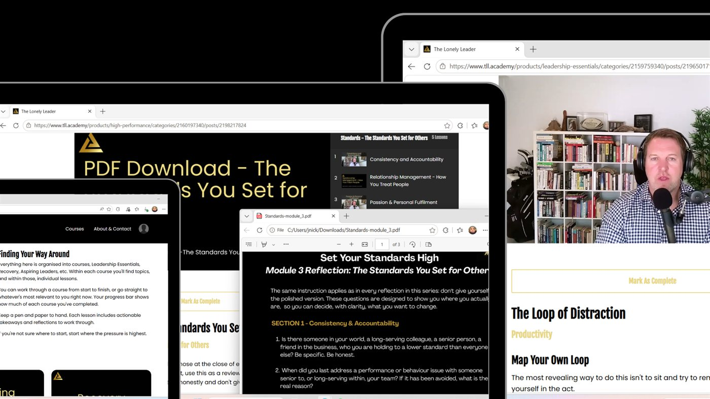
The Lonely Leader Academy: the membership built in Kajabi.
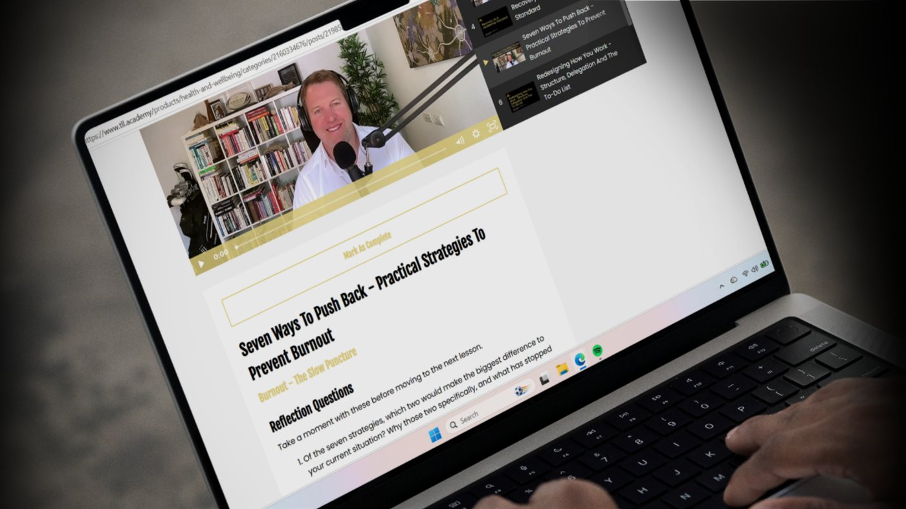
Inside a lesson: structured leadership content for members.
Content & brand support
Creative and strategic support across the brand.
I provide ongoing creative and strategic support across The Lonely Leader brand. This has included creating social assets, editing additional video content, supporting social media activity and advising on messaging, content planning and how ideas can be adapted across different formats and platforms.
The relationship often moves between strategy and execution: helping shape an idea, deciding how best to communicate it, and then producing the finished content.
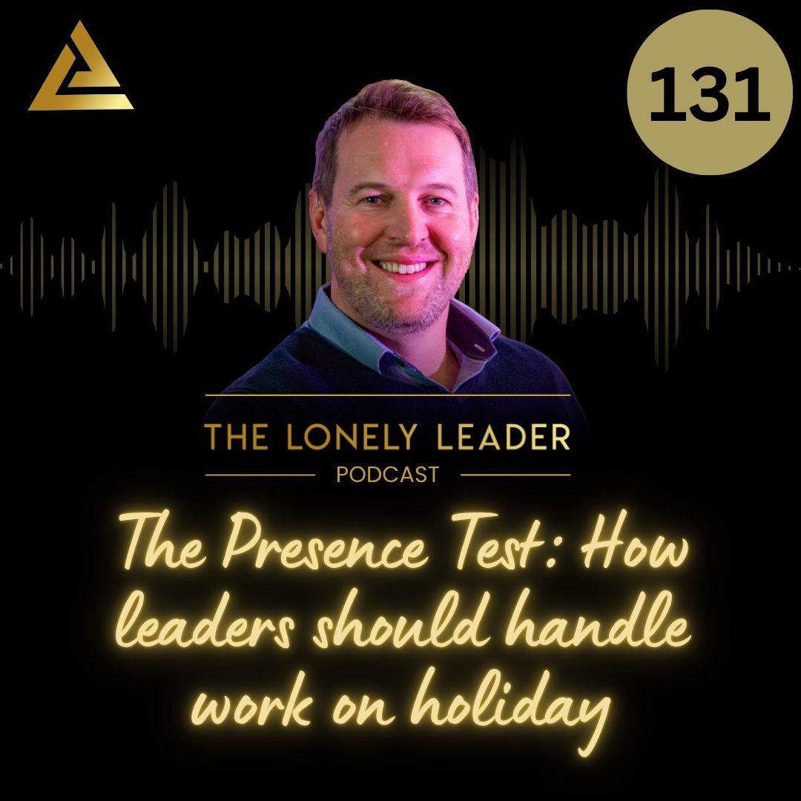
Episode card
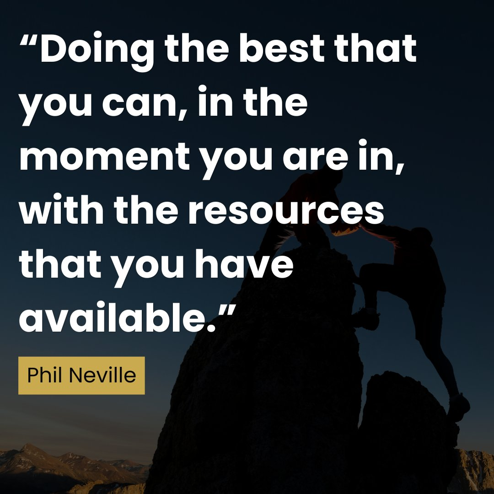
Quote graphic
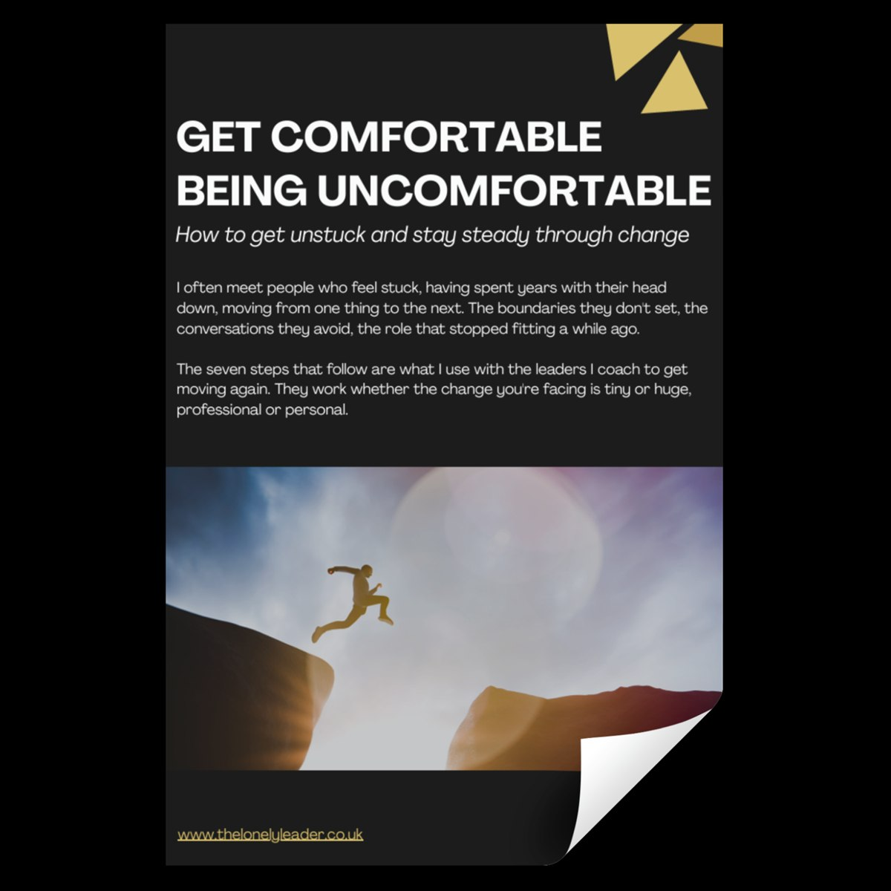
Guide cover
Jo has a creative flair and eye for detail that means she has become the driving force behind the growth and expansion of our digital portfolio.
James RuleFounder, The Lonely Leader
Dice House Media
Short-form video editing · Podcast video · Social content
I work with Dice House Media on video content for Hell or High Rollers, turning long-form podcast episodes into short, sharp clips for social media, alongside editing full-length video episodes for their Patreon.
I identify stand-alone moments, find the strongest hook, and shape each clip into a scroll-stopping short-form video for use across social media.
Long-form → short-form
Podcast episodes turned into social-first edits
Under 60 seconds
Fast, self-contained clips for socials
Full episodes
Long-form video editing for Patreon
Short-form social editing
Finding the moment, then shaping the edit around it.
I identify funny, memorable or attention-grabbing moments that will translate well to social media. I then turn them into concise vertical edits, tightening pauses and dialogue, restructuring where needed and sometimes using an opening hook to draw viewers into the clip.
The editing is particularly driven by timing and context: preserving the comedy of the original conversation while making sure the clip still lands for someone who hasn’t heard the full episode.
Hell or High Rollers: short-form social edit.Hell or High Rollers: short-form social edit.Hell or High Rollers: short-form social edit.
Full-length video
Editing complete podcast episodes for Patreon.
Alongside social cutdowns, I’ve edited full-length video episodes for Dice House Media’s Patreon, working with longer-form footage while keeping the pace, character and comic timing of the show intact.
Jo has great comedic instincts… her videos have given our socials a real boost.
Ellie MorrisDice House Media
St George’s Community Centre
Communications · Branding & Design · Social Media · Digital Content
I’ve worked with St George’s Community Centre in Wakefield across several projects, providing branding, content creation, social media and communications support. This has included leading communications for community health initiatives, developing visual identities and promotional materials, and providing cover for their Communications Officer several times.
Happy & Healthy Project
Social media strategy, branding, copywriting, communications and engaging communities.
A community health initiative supporting families with young children across Wakefield. I developed the project’s branding and communications strategy, created and managed social media content, and helped build an engaged online community that encouraged families to access local activities and support. My work included paid promotional content, giveaways and liaising with press and local advertisers.
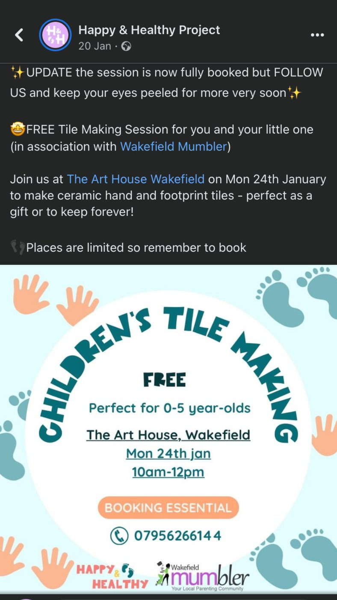
Event promotion
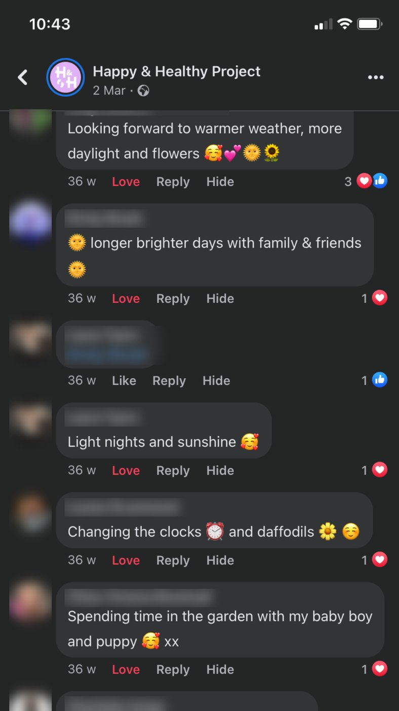
Community engagement
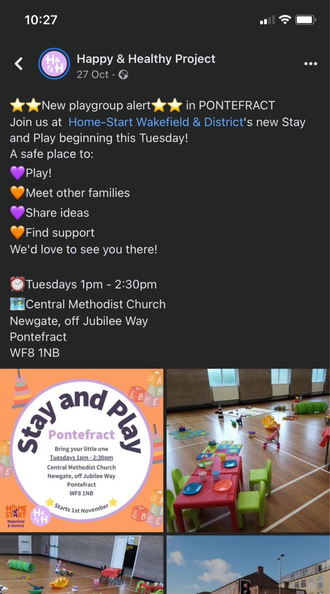
Event promotion
Social media was the tool of engagement that was most successful in engaging parents in the community.
Project evaluationHappy & Healthy Project
Future SELPH
Branding, promotion and launch platforms.
A community-based project supporting young people aged 16–25 across Wakefield to improve their mental health and emotional wellbeing. I developed the branding and visual identity for Future SELPH, creating promotional and advertising materials and setting up the digital platforms needed to support the project’s launch and communications.
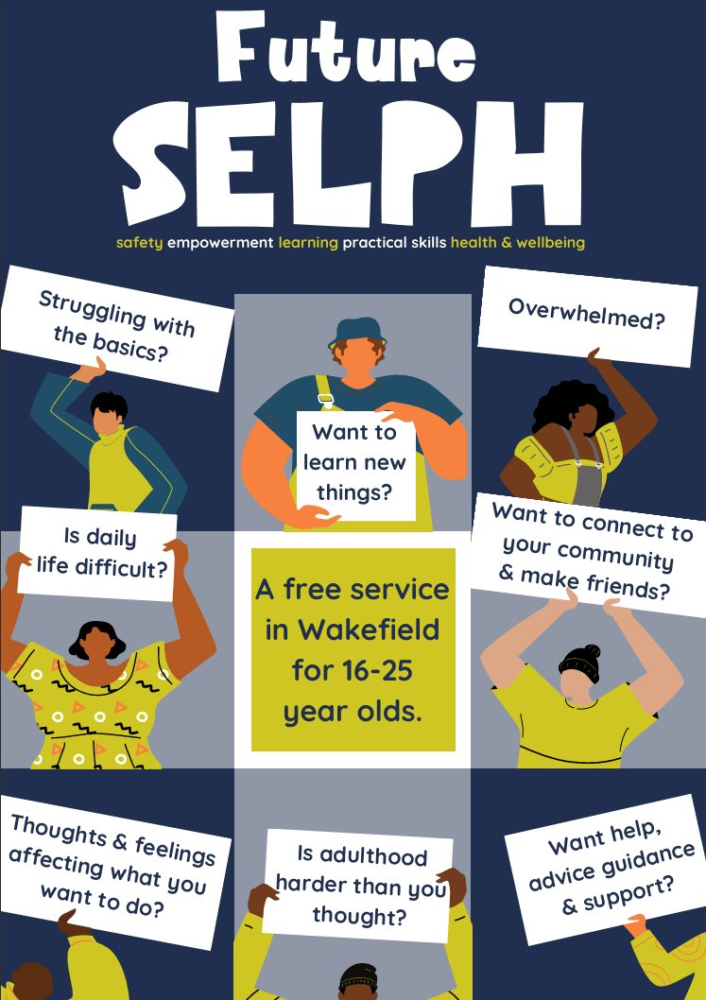
Brand design
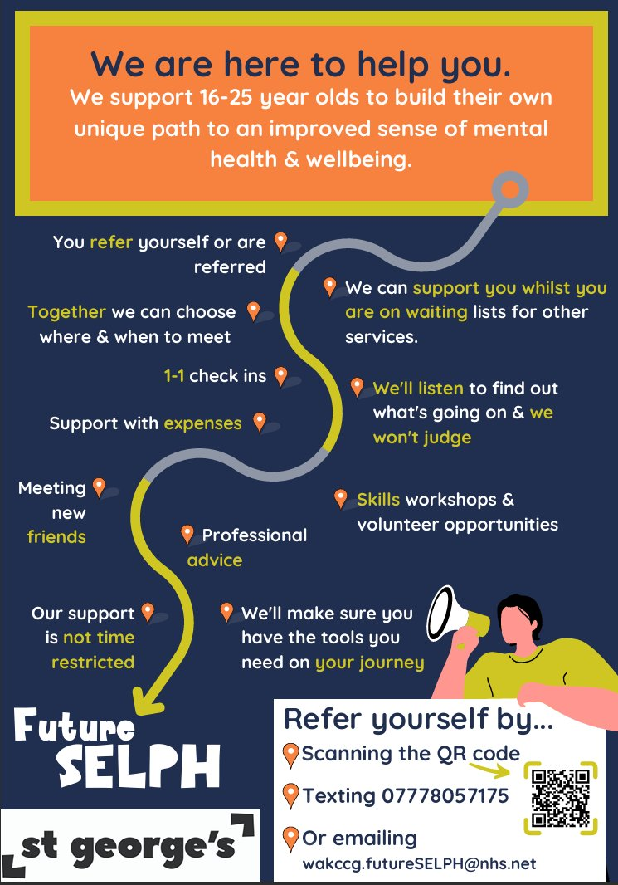
Brand design
Communications Officer cover
Freelance cover, on several occasions.
I’ve provided freelance cover for St George’s Communications Officer on several occasions, supporting the organisation’s ongoing communications and content needs.
This has included liaising with teams across the organisation to identify news, activities and stories to promote, creating social media content, writing and editing copy, developing promotional materials and contributing to marketing strategies. My role has involved adapting communications for different audiences, maintaining a consistent tone of voice and helping ensure the organisation’s projects, services and achievements are communicated clearly and effectively.
Joanna was an outstanding communications professional who helped us strengthen our messaging, increase engagement, and tell our story more effectively.
Berni O’BrienCEO, St George’s Lupset
Athlete Transition Accelerator
Brand development · Podcast production · Video editing · Social media strategy · Digital content · Copywriting
I worked closely with the founders of Athlete Transition Accelerator (ATA) to develop the brand’s identity and establish its digital presence, creating a consistent look, feel and voice across its podcast, social media channels and promotional materials.
From initial brand development through to ongoing content production, my role combined creative direction, technical production and marketing strategy. I helped shape how ATA communicated with its audience, then created and managed the content that brought the brand to life.
Podcast, YouTube, Instagram, LinkedIn
Content produced and adapted for each channel
Identity + voice
Developed with the founders, then carried across every asset
Audience first
Content planned around the community it needed to engage
Brand development
Building a recognisable identity from the ground up.
Working collaboratively with the founders, I helped develop ATA’s visual identity and tone of voice, establishing its colour palette, imagery, messaging and overall creative direction.
I then translated this identity into a consistent range of digital assets, including social media graphics, edited photography, promotional PDFs, podcast artwork and video title sequences, ensuring the brand felt cohesive and professional across different platforms.
The title sequence built for ATA’s YouTube episodes.
Podcast & video production
Taking conversations from recording to publication and beyond.
I set up and managed ATA’s podcast, overseeing the editing, scheduling and publishing of episodes. This included writing SEO-optimised show notes, developing episode titles and creating branded video title sequences for YouTube.
I also transformed each long-form interview into a series of short, engaging social media clips, identifying key moments and editing them into accessible, stand-alone content designed to reach new audiences and encourage engagement with the full episodes.
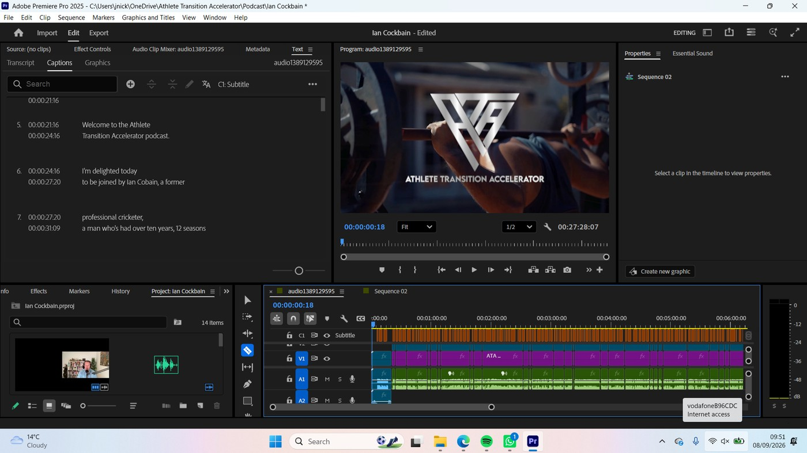
Editing an episode in Premiere Pro.
Tonia Couch: ‘From Diving 10 Metres to the Next Chapter’.Tom Bosworth MBE: ‘The Day the Race Ends’.Steve Bate MBE: ‘Choosing to Walk Away When You Still Can Win’.
Social media & content strategy
Developing content that builds awareness and connects with audiences.
I helped establish ATA’s social media presence, planning content strategies and promotional campaigns to build brand awareness and engage its target audience.
My work included creating graphics, editing photography, writing platform-specific copy and producing content for LinkedIn and other social channels. I also supported community engagement, connecting with relevant online networks and identifying opportunities to increase the brand’s visibility.
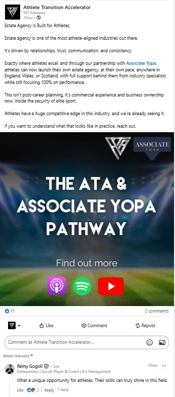
Partnership announcement
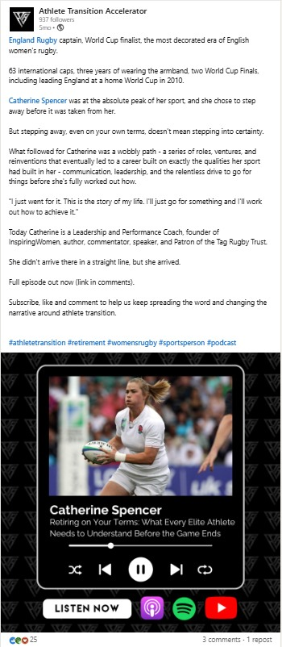
Episode post
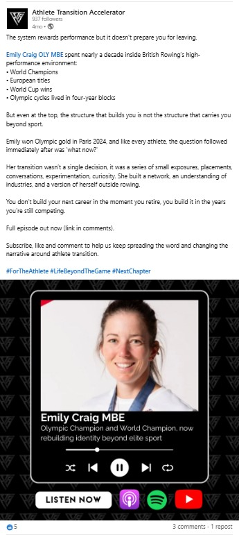
Episode post
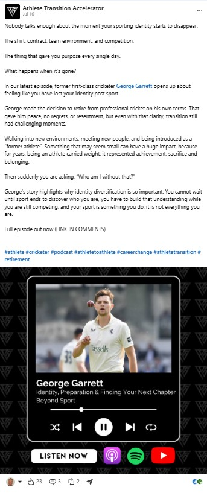
Episode post
Throughout the project, I combined strategic planning with hands-on content creation, helping turn the founders’ ideas into a consistent, engaging digital presence.
Manchester South Central Foodbank
Social media management · Content creation · Campaign planning · Community engagement
I volunteered as a Social Media Manager for Manchester South Central Foodbank for approximately two to three years, helping to raise awareness of the organisation’s work, communicate local needs and encourage community support through engaging, accessible digital content.
Working alongside another volunteer, I helped manage the foodbank’s Facebook, Instagram and Twitter accounts, which had a combined following of over 4,000 people at the time.
2–3 years
Volunteering as its social media manager
4,000+
Combined following across its channels at the time
Facebook, Instagram, Twitter
Managed alongside one other volunteer
Social media & content creation
From urgent donation requests to thank-yous for local supporters.
I created and scheduled regular social media content, developing consistent, recognisable graphics using Canva and writing engaging, accessible copy tailored to each platform.
Content ranged from urgent food donation requests and shopping lists to fundraising appeals, community updates and stories celebrating the generosity of local supporters.
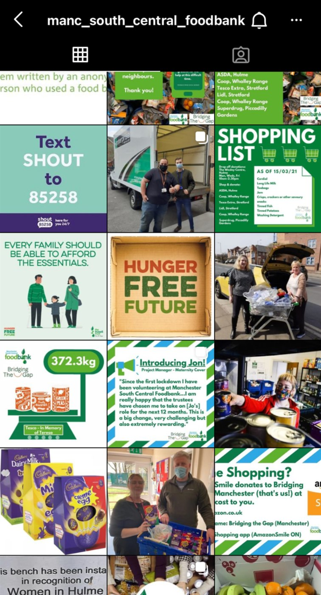
The Instagram grid
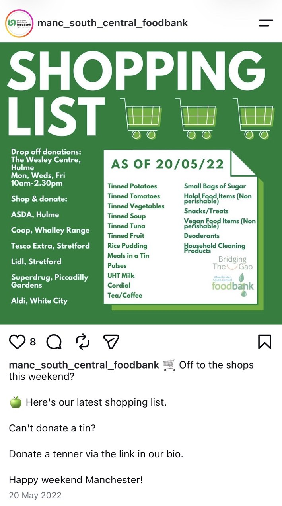
Donation request
Campaign planning & community engagement
Timing the ask, then answering everyone who responded.
I researched and developed ideas for social media campaigns, using relevant events and awareness days to encourage donations, volunteering and wider engagement.
I also helped maintain the foodbank’s relationships with its online community, responding to messages, acknowledging donations and support, and engaging with local individuals, businesses and organisations.
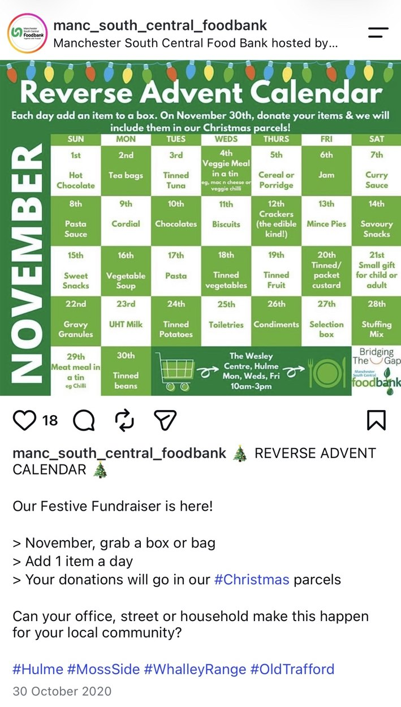
Festive fundraiser
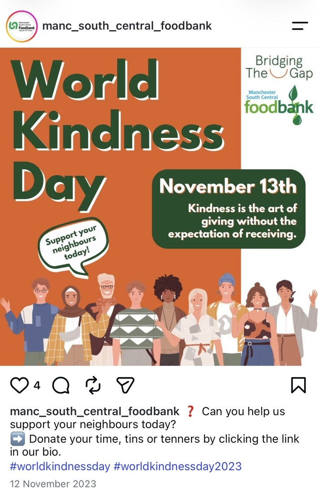
Awareness day campaign
Working closely with the foodbank’s staff and Project Manager, I helped ensure its social media channels remained informative, responsive and connected to the needs of the local community.
More
What clients have said, and how to get hold of me.